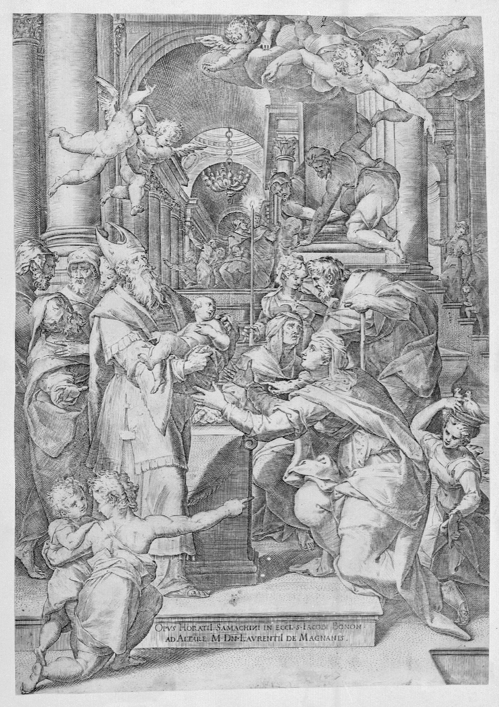
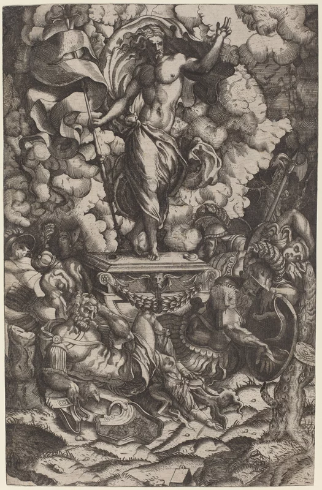
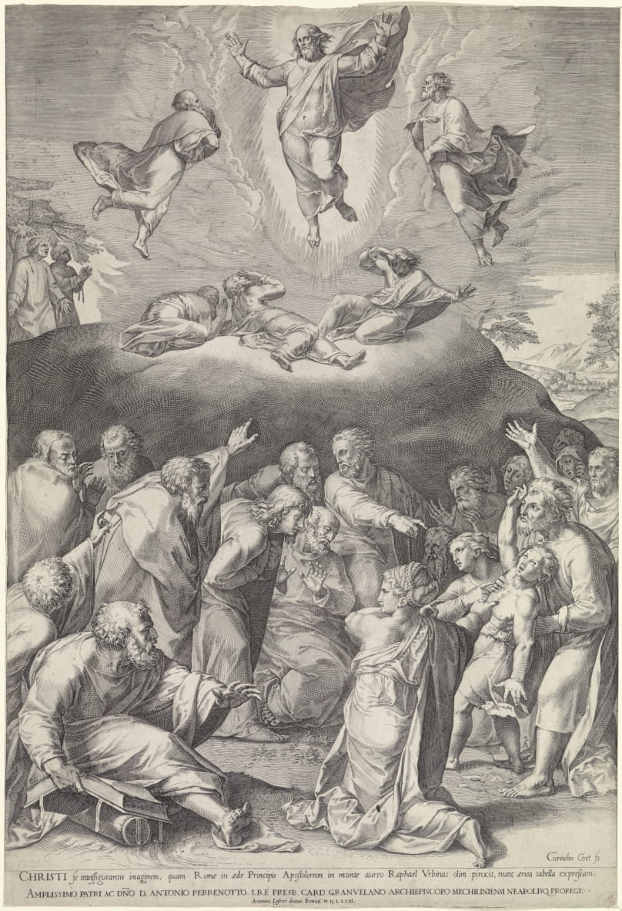

La iconografia del retaule del Roser
The Rosary altarpiece's iconography
Com era usual a l'època, el sistema gremial i els pocs beneficis obtinguts en cada encàrrec no eren un al·licient per a la invenció i originalitat. Així doncs, era usual prendre gravats o altres retaules com a models a copiar, per a realitzar les composicions que els encarregaven.
Els gravats van ser un mitjà molt important per a poder estar al corrent del que es duia a terme als centres artístics més importants del moment. Els escultor prenien alguna figura o tot el gravat per a copiar allò que els interessava. Aquesta operació de copiat però, no era mai exacte, perquè s'havia ajustar a noves dimensions i convertir els dibuixos monocroms i ombrejats de les estampes a formes volumètriques que després serien acolorides. A més, el major o menor mimetisme de la referència original, també dependria de l'habilitat del mestre artesà i de la seva capacitat per a resoldre les adaptacions necessàries ❝❞.
Aquest fet queda ben clar en el retaule del Roser, on veiem que Joan Grau ha utilitzat diversos models ben identificables per als relleus per a composar algunes de les escenes dels 15 misteris del Roser, que Grau esculpirà de manera ascendent, és a dir, els misteris de dolor a la part baixa, els misteris de goig al mig i finalment les escenes de la part alta del retaule seran les glorioses.
As was usual at the time, the guild system and the small profits obtained in each commission were not an incentive for invention and originality. So, it was common for sculptors to take engravings or other altarpieces as models to copy, as to create their compositions.
Engravings were very important means of keeping up with what was going on in the most important artistic centers of the time. The sculptors took some figures or the whole engraving to copy what was interested for them. This copying operation, however, was never exact, because the new composition had to be adjusted to new dimensions and it was necessary to convert the monochrome and shaded drawings of the prints into volumetric shapes that would later be colored. In addition, the greater or lesser mimicry of the original reference would also depend on the skill of the master craftsman and his ability to solve the necessary adaptations ❝❞.
This fact is very clear in the Rosary altarpiece, where we see that Joan Grau used several models to create the reliefs to compose some of the scenes of the 15 mysteries of the Rosary, which Grau sculpted in an ascending order, that is to say, the Sorrowful Mysteries in the lower part, the Joyful Mysteries in the middle and finally the Glorious Mysteries in the upper part of the altarpiece.
Un retaule no està complert fins que no ha estat policromat i daurat. I aquest procés va iniciar-se el 1656. Gabriel Adrià, primer daurador que va participar en l'obra del retaule el podem reconèixer perquè tenia la particularitat d'omplir els relleus de motius antropomòrfics i zoomòrfics. Al relleu del Naixement, dit també Adoració dels pastors cobreix les teles amb aquest motius tant característics ❝❞.
El segon daurador, Magí Torrebruna, l'identificarem perquè els motius que plasmarà als relleus del retaule del Roser de Manresa que policromarà disten dels de Gabriel Adrià, Magí optarà per motius vegetals, pintats sobre el pa d'or i esgrafiats ❝❞.
An altarpiece is not complete until it has been polychromed and gilded. And this process began in 1656. Gabriel Adrià, the first gilder who participated in the work of the altarpiece, can be recognized because he had the particularity of filling the reliefs with anthropomorphic and zoomorphic motifs. In the relief of the Nativity, also called Adoration of the shepherds, covers the canvases with this very characteristic motif ❝❞.
The second gilder, Magí Torrebruna, can be identified because the motifs he will depict in the reliefs of the Rosary altarpiece of Manresa that he polychromed are quite different from those of Gabriel Adrià, Magí opted for vegetal motifs, painted on the gold leaf and sgraffito ❝❞.


Els misteris de dolor els conformen aquells passatges relacionats amb el patiment de Jesús.
The Mysteries of Sorrow are those passages related to the suffering of Jesus.
L'oració a l'hort de Getsemaní està localitzada en un paisatge natural amb un terreny molt sinuós, al fons del qual hi veiem insinuades unes muntanyes de gran altitud. En aquesta escena s'explica que, el dia abans de ser detingut i que comencés la Passió, just després de l'Últim Sopar, Jesús va anar a pregar juntament amb els apostols Pere, Joan i Jaume en aquest indret. Als tres acompanyans els veiem a la part central i dreta del relleu, en primer pla, sumits en un son profund, mentre a Jesús, situat a l'esquerre, se li apareix un àngel que l'encoratjava i l'animava per apaivagar l'angoixa que sentia Jesús al saber tot el que li havia de passar.
Al centre de la composició, Judes i un soldat s'acosten a la escena. Encara lluny veiem que el primer porta una llanterna i el segon tres fletxes. Si bé encara no està ocorrent, sabem que Judes trairà a Jesús. Per tant, la composició de Joan Grau ja explica el que passarà a continuació.
The scene of the Agony in the Garden of Gethsemane is located in a natural landscape with a very winding terrain, and in the background of which we see some higher mountains. In this scene it is explained that, the day before Jesus was arrested and the Passion began, just after the Last Supper, he went to pray accompanied of the apostles Peter, John and James in this place. We see the three companions in the central and right part of the relief, immersed in a deep sleep, while located on the left, an angel visits Jesus to encouraging him and to help him with the anxiety that Jesus felt because of knowing everything that was going to happen to him.
In the background of the composition, Judas and a soldier approach the scene. Still far away, we see that the first one carries a lantern and the second three arrows. Although it is not yet happening, we know that Judas will betray Jesus. Therefore, Joan Grau's composition already explains what will happen next.
L'arquitectura que esdevé l'escenari per a l'escena de la Flagel·lació que esculpeix Joan Grau, policromada amb colors molt foscos, contrasta amb les pells nues dels botxins i la de Jesús, a qui veiem al centre amb les mans lligades al darrera amb una corda. Envoltant a Jesús hi ha els quatre botxins armats que li executaran el càstig corporal. Un d'ells està agenollat lligant amb una corda el que semblen pals de fusta, que esdevindrà l'arma, la mateixa que veiem que empunyen els dos personatges de la dreta. El botxí restant, en canvi, fa ús d'un flagell o fuet.
Cal no passar per alt el personatge de l'esquerra de la composició: és Judes, que en un segon pla mira l'escena passivament des de darrera la porta.
The space sculpted by Joan Grau is an architecture with very dark colors, that contrast with the bare skins of the executioners and that of Jesus, who we see in the central part of the composition, with his hands tied behind his back with a rope. Surrounding Jesus are the four armed executioners who will carry out the corporal punishment. One of them is kneeling, tying with a rope what appear to be wooden sticks, which will become the weapon, the same one we see wielded by the two characters on the right. The remaining executioner, on the other hand, makes use of a scourge or whip.
We must not forget to mention the character on the left of the composition: it is Judas, who is in the background watching passively the scene from behind the door.
A mode de burla, després de flagel·lar a Jesús els soldats romans el vesteixen amb una capa morada, li fan subjectar una canya i li col·loquen una corona d'espines mentre li diuen que és el "rei dels Jueus". Els soldats saben que Jesús s'havia proclamat rei davant Pons Pilat i amb aquesta indumentària volen ridiculitzar la imatge d'un personatge d'aquest rang (substituint la corona de llorer per la d'espines, el cetre per una canya i la capa morada per un paludamentum imperial).
Aquesta escena que hem explicat la conformen els quatre personatges centrals, mentre que a la dreta hi ha Judes, que penedit dels seus actes reclama l'alliberació de Jesús, tot i que no ho aconseguirà.
As a mockery, after flagellating Jesus, the Roman soldiers dress him in a purple cape, make him hold a cane and place a crown of thorns on him while calling him "King of the Jews". The soldiers know that Jesus had proclaimed himself king in front of Pontius Pilate and with this clothing they want to ridicule the image of a personage of this rank -replacing the laurel crown with the one of thorns, the sceptre with a cane and the imperial paludamentum with a purple cape-.
This scene that we have described is made up of the four central characters, while on the right is Judas, who repents of his actions and demands the release of Jesus even though he will not succeed.
Aquest relleu conserva la part estructural, fent un angle recte en què a la part frontal hi ha el relleu del Camí al Calvari i a la lateral un motiu floral. Però si mirem el retaule frontalment, veiem que amb una volta a l'esquerra de la composició, Joan Grau aconsegueix mostrar que un cop finita l'escena anterior, la processó que portarà a Jesús pel a la seva crucifixió surt de l'arquitectura en què es trobaven fins a aquell moment per a iniciar la nova escena.
La processó, que va d'esquerra a dreta, mostra diversos moments o estacions del Via Crucis, davant d'un paisatge que ens recorda al que apareix a l'escena de l'Oració a l'Hort de Getsemaní. Podem veure com Jesús ja s'ha trobat amb la seva mare al camí, perquè està darrera de la processó. També veiem al Cirineu (Simó de Cirene) que està ajudant a portar la creu a Jesús. I veiem també que Jesús s'acaba de trobar a Verònica, que porta la vera creu a la mà.
This relief preserves the structural part, making an L shape in which in the front there is the relief of the Road to Calvary and on the side a floral motif. But if we look at the altarpiece from the front, we see that Joan Grau manages to show that once the previous scene (the relief located at the left of this one) is finished, the procession that will lead Jesus to his crucifixion leaves the architecture that they were in up to that moment to start the new scene.
The procession, which goes from left to right, shows various moments or stations of the Via Crucis in front of a landscape that reminds us of that which appears in the scene of the Agony in the Garden of Gethsemane. We can see how Jesus has already met his mother on the way, as she is behind the procession. We also see the Cyreneus (Simon of Cyrene) who is helping Jesus to carry the cross. Finally, we notice that Jesus has just found Veronica, who has the vera icona in her hand.
L'última escena dels misteris Dolorosos la trobem al capdamunt del retaule, representat per les úniques figures exemptes que es conserven. Aquest grup de tres: Maria a l'esquerra (amb la vestimenta amb què l'hem vist i la veurem en totes les escenes a què apareix), Jesús crucificat al centre i Sant Joan a la dreta. Tant Maria com Joan miren cap amunt, corpresos davant la imatge del Salvador a la creu. D'aquest grup escultòric, Bosch❝❞ assenyala que,
"manifesta una factura precipitada -excepte el Crucificat- i barroera potser perquè l’autor es va refiar de l’alçada en què es disposaria i del fet que quedaria semi-oculta pel gran dosser cupulat"
The last scene of the Sorrowful Mysteries can be found at the top of the altarpiece, represented by the only exempt figures. This group of three is made up of Mary on the left -in the clothing we have seen her in and will see her in all the scenes in which she appears-, Jesus crucified in the center and Saint John on the right. Both Mary and John look up, overwhelmed by the image of the Savior on the cross. Of this sculptural group, Bosch❝❞ points out that it seems that Joan Grau sculpted this group -except Jesus- quickly and rudely, perhaps because they would not be seen closely given their position in the altarpiece.
Els misteris de goig narren aquelles escenes de felicitat en la vida de la Mare de Déu.
The mysteries of joy narrate those scenes of happiness in the life of the Virgin Mary.
L'escena en què l'Arcàngel Gabriel anuncia a la Verge Maria que serà la mare de Jesús, Joan Grau l'esculpeix de manera molt senzilla amb només quatre personatges. La Verge es troba sota un dosser, rere un escriptor amb un llibre obert mentre l'arcàngel baixa del regne celestial per a anunciar-li la nova amb unes flors blanques a la mà, símbol de la puresa de Maria. A la part superior, es miren l'escena de lluny Déu Pare i l'Esperit Sant. L'escena té lloc sobre un fons daurat atemporal, ple de núvols i angelets pintats, envoltant les tres figures celestials.
Joan Grau sculpts the passage in which the Archangel Gabriel announces to the Virgin Mary that she will be the mother of Jesus in a simple composition containing only four characters. The Virgin is under a dossel, behind a desk with an open book, while the archangel comes down from the heavenly realm to announce the good news with white flowers in his hand, a symbol of Mary's purity. At the top, God the Father and the Holy Spirit look at the scene from afar. This takes place on a timeless golden background, full of clouds and painted angels surrounding the three heavenly figures.
Seguint una estampa de Ioannis Antonii de Paulis de 1588 feta sobre una pintura de Federico Barocci, apareixen a l'escena Josep i Maria, i Elisabet i Zacaries. L'episodi explica la visita que Maria fa a la seva cosina Elisabet, que també està embarassada, i com aquesta li diu que serà la mare del Salvador. Com a mètode de confirmació, el bebè que Maria porta dins el ventre es belluga. En el relleu de Joan Grau, les dues dones parlen entre elles mentre Josep ajupit en primer pla, aliè a la notícia, està deixant a terra les alforges que té a la mà, segurament després de descarregar-les de l'animal que té al darrera i del qual només en veiem el cap. Per altra banda, Zacaries escolta la conversa de les dones des de l'ampit de la porta, sense interferir en aquesta.
Following the composition of a print by Ioannis Antonii de Paulis from 1588 made from a painting by Federico Barocci, Joseph and Maria, and Elizabeth and Zacharias appear in the scene. The episode explains the visit that Maria makes to her cousin Elisabeth who is also pregnant, and how the latter tells the former that she (Maria) will be the mother of the Savior. The baby Maria carries in her womb wiggles to confirm Elisabeth's words. In Joan Grau's relief, the two women talk to each other while Joseph is kneeling in the foreground, oblivious to the news, leaving the saddlebags that he has in his hand on the ground, probably after unloading them from the animal he has behind him and of which we only see the head. On the other hand, Zacharias listens to the women's conversation from the doorway, without interfering in it.
La composició del Naixement està feta prenent de punt de partida l'estampa de 1567 que Cornelis Cort va fer a partir de l'obra de Taddeo Zuccaro. I com en l'estampa, els personatges es situen en un interior, del qual només veiem una paret de carreus interrompuda per dos arcs que deixen entreveure un paisatge natural amb animals i amb alguns edificis al fons a la finestra de l'esquerra, i les ruines d'un edifici i altres edificis a la de la dreta.
El nounat ocupa la part central inferior del relleu i és el centre de totes les mirades, és el personatge entorn al qual es desenvolupa l'escena. Tot voltant del Messies hi ha la Verge amb les mans juntes en símbol de pregària i Josep a la dreta de Maria, i omplen l'escena els camperols i ramaders.
The composition of the Nativity is based on the 1567’s print that Cornelis Cort made from the work of Taddeo Zuccaro. And as in the print, the characters are located in an interior, from which we only see a wall interrupted by two arches that reveal a natural landscape with animals and with some buildings on the left, as well as the ruins of a building and other buildings on the right.
The newborn occupies the lower central part of the relief and is the center of all gazes, he is the character around whom the scene unfolds. All around the Messiah is the Virgin with her hands together in a symbol of prayer and Joseph on the right of Mary.
Emmarcada dins d'una arquitectura luxosa, l'escena explica la presentació de Jesús al Temple de Jerusalem quaranta dies després del seu naixement. Joan Grau fer la composició seguint l'estampa feta per Agostino Carracci a partir d'una obra d'Orazio Sammachini❝❞ on Josep i Maria (a la dreta) porten el nen al Temple i com és costum, ofereixen dos tòrtores, que porta en un cistell sobre el cap la dona de l'esquerra del relleu (una tòrtora està trencada i el cap ha desaparegut). El bisbe agafa en nen en braços, a qui miren tots els personatges que l'envolten així com dels àngels, que observen l'escena des d'un pla més alçat. Respecte l'estampa italiana cal apuntar tant la desaparició de la perspectiva i profunditat, com la radical reducció dels personatges en l'escena❝❞.
Framed within a luxurious architecture, the scene tells the story of the presentation of Jesus in the Jerusalem Temple forty days after his birth. Joan Grau created this composition following the print made by Agostino Carracci based on a work by Orazio Sammachini❝❞ where Joseph and Mary -on the right- take their child to the Temple and, as is customary, offer two doves, which carries the woman on the left in a basket on her head -one of the doves is broken and the head has disappeared-. The bishop takes the child in his arms, to whom every character is looking, including the angels, who observe the scene from a higher plane. Regarding the Italian print, it is necessary to note that both perspective and depth have disappeared, and the characters in the scene have been radically reduced❝❞.
Aquest passatge explica com, durant les festes de Pasqua, els pares de Jesús van sempre a Jerusalem però l'any en què Jesús tenia l'edat de 12 anys, el perden. Després de buscar-lo durant tres dies, el troben conversant amb els doctors i savis del Temple. En aquest passatge és la primera vegada en què Jesús explicitament diu que és el fill de Déu.
Segons Bosch❝❞ aquesta composició segurament no seguia cap model, ja que el resultat és una escena sense perspectiva i poc reixida visualment tot i que l'escena s'entén perfectament. Dins l'arquitectura del temple veiem, a dalt a l'esquerra, a Josep i Maria que miren a Jesús. Endevinem en el gest de Maria l'alleujament d'haver trobat el seu fill, representat sota el dosser i personatge principal de l'escena, però també veiem com Jesús per primera vegada apareix com el predicador que serà durant la seva vida. És també interessant veure com el doctors del temple, aquells que decreten i vetllen pel compliment de les lleis, escolten atentament allò que explica Jesús.
This passage explains that, during the Easter holidays, Jesus' parents always went to Jerusalem but when Jesus was 12 years old, they lost him. After searching for him for three days, they found him conversing with the doctors and sages of the Temple. In this scene is also the first time that Jesus explicitly says that he is the son of God.
According to Bosch❝❞ this composition certainly did not follow any model, since the result is a scene without perspective and not very successful visually even though it is perfectly understable. At the top left side, inside the architecture of the temple we see Joseph and Mary looking at Jesus. We guess in Mary's gesture the relief of having found her son, which is under the canopy and is main character of the scene. We also see how Jesus appears for the first time as the preacher he will be during his life. It is interesting to see how the doctors of the temple, those who decree and ensure the fulfilment of the laws, listen attentively to what Jesus explains.
Els misteris gloriosos fan referència a les escenes que mostren el caràcter diví de Jesús.
The glorious mysteries refer to the scenes that show the divine character of Jesus.
A partir dels models de Salviati,❝❞ Joan Grau realitza un relleu en què omple la part inferior amb soldats que miren incrèduls i es protegeixen espantats amb els escuts d'allò que no entenen, la visió de Jesús sortint de la tomba i retornat a la vida després d'haver estat enterrat tres dies abans. Jesús fa el gest amb la mà dreta de beneir mentre que a la mà esquerra hi porta una creu que alhora fa de màstil per una bandera blanca.
Based on the models of Salviati,❝❞ Joan Grau makes a relief in which he fills the lower part with soldiers who look in disbelief and protect themselves with the shields of what they do not understand: the vision of Jesus coming out of the tomb and brought back to life after being buried three days before. Jesus makes the gesture of blessing with his right hand while in his left hand he carries a cross which at the same time acts as a mast for a white flag.
L'escena mostra com el Salvador ascendeix després de ressuscitar en presència dels apòstols i de la Verge. Joan Grau ha pres algunes figures del gravat de Cornelis Cort que va fer de l'obra de Rafael titulada Transfiguració sobre el Mont Tabor❝❞ així com el fet d'omplir la part baixa de l'escena amb la Verge i els apòstols incrèduls mirant a Jesús, mentre que aquest ocupa la part central superior del relleu, amb els braços oberts i dins la glòria, representada amb uns núvols de forma ametllada en els quals hi apareixen dos caps d'àngels.
The scene shows how the Savior ascends after being resurrected in the presence of the apostles and the Virgin. Joan Grau has taken some figures from Cornelis Cort's engraving of Raphael's work entitled Transfiguration on Mount Tabor❝❞ as well as filling the lower part of the scene with the Virgin and the incredulous apostles looking at Jesus. This latter occupies the upper central part of the relief, with open arms within the glory, represented with clouds organized in an almond-shaped form in which two angels' heads appear.
La Pentecosta és un passatge que explica el descens de l'Esperit Sant i l'inici de la tasca predicadora i evangelitzadora dels apòstols. La composició, agafada de les de Vasari,❝❞ es desenvolupa davant una arquitectura interior d'un temple. A la part superior, l'Esperit Sant al centre, i emmarcat per l'arquitectura de la cúpula i per una glòria de núvols pintada de colors clars, descendeix frontalment dirigint-se cap als personatges de la meitat inferior de l'escena. Maria es troba al centre, envoltada de tots els apòstols, que miren amb sorpresa i admiració el colom blanc, que els encomanarà la seva tasca.
Pentecost is a passage that explains the descent of the Holy Spirit and the beginning of the preaching and evangelizing work of the apostles. The composition, taken from those of Vasari,❝❞ unfolds in the interior a temple. At the upper central part there is the Holy Spirit, framed by the architecture of the dome and by a glory of clouds painted in light colors, descending head-on towards the characters in the lower half of the scene. Mary is in the center, surrounded by all the apostles, who look with surprise and admiration at the white dove, which will entrust them with their task.
Després d'haver viscut a la terra, el cos i l'ànima de la Mare de Déu pugen al cel. En el relleu esculpit per Joan Grau, es mostra en el mateix moment la descoberta dels apòstols del sepulcre de Maria i la seva ascensió. Així doncs, veiem la Mare de Déu a la part central superior de la composició, dins la glòria representada amb núvols, i acompanyada de tres angelets. A la meitat inferior l'apostolat es reparteix en l'espai per admirar tant la visió de la Verge com el sepulcre que, obert, pren una posició principal en l'escena. En les figures dels apòstols hi podem apreciar una gran varietat de gestos, posicions corporals i fins i tot expressions facials que mostren la incredulitat dels apòstols davant allò que està succeint.
Segons Bosch❝❞ la figura de la Mare de Déu seria propera a la Magdalena Ascendent de Luca Cambiaso mentre que la part inferior podria haver estat basada en una estampa d'A. Sadeler a partir del disseny de Joannes Speckard.
After living on earth, the body and soul of the Virgin ascended to heaven. In the relief the apostles' discovery of Mary's tomb and their ascension are shown at the same moment. We see the Virgin Mary in the upper central part of the composition, in the glory, represented with clouds, and accompanied by three little angels. In the lower half the apostolate occupies all of the width of the relief to admire both the vision of the Virgin and the sepulchre, which, open, takes a main position in the scene. In the figures of the apostles we can see a great variety of gestures, body positions and even facial expressions that show the disbelief of the apostles at what is happening.
According to Bosch❝❞ the figure of the Virgin would be close to the Ascending Magdalene by Luca Cambiaso, while the lower part of the relief could have been based on a print by A. Sadeler based on a Joannes Speckard's design.
La Coronació de la Mare de Déu és un passatges que explica com Jesús, acompanyat pel Déu Pare i per l'Esperit Sant coronen a la Mare de Deu. La totalitat d'aquest relleu transcorre dins la glòria, representada amb núvols i amb àngels que acompanyen l'acció dels personatges principals, sobre un fons de color taronja. Al centre, agenollada i amb les mans juntes en símbol de pregària veiem a la Verge Maria. A la nostra dreta hi ha Déu Pare amb la bola del món a la mà esquerra, símbol de l'omnipotència mentre que amb la mà dreta aguanta la corona sobre el cap de Maria. Aquesta corona la subjecta també Jesús per l'altre costat amb la mà dreta. Finalment, sobre la Mare de Déu hi veiem l'Esperit Sant.
The Coronation of the Virgin Mary is a passage that explains how Jesus, God the Father and the Holy Spirit crown the Virgin Mary. The entirety of this relief takes place within the glory, represented with clouds and angels accompanying the action of the main characters, on an orange background. In the center, kneeling and with her hands together as the symbol of prayer, we see the Virgin Mary. To our right is God the Father with the globe of the world on his left hand, a symbol of omnipotence while with his right hand he holds the crown on Mary's head. Jesus also holds the crown on the other side with his right hand. Finally, above the Virgin we see the Holy Spirit.